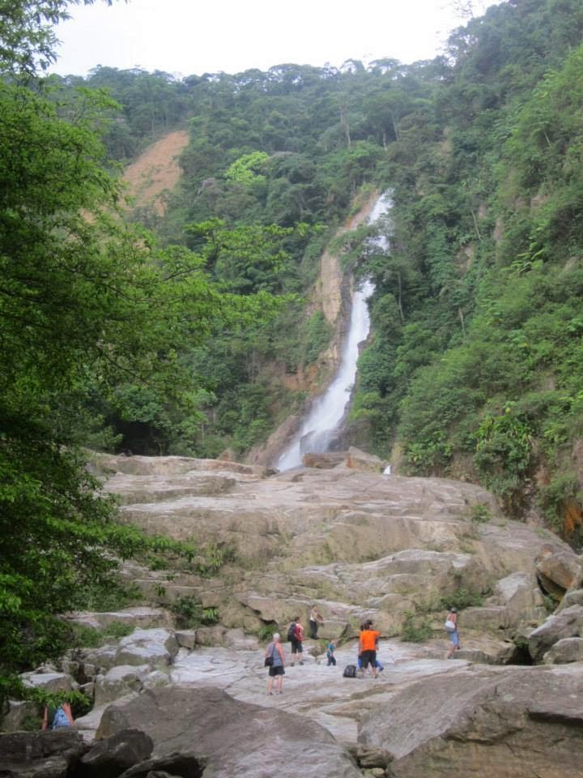

Trilha de Padre Anchieta

A Trilha de Padre Anchieta é uma rota histórica que conecta as cidades de São Vicente e Cubatão, na Baixada Santista, Brasil. Esta trilha é famosa por sua importância histórica e cultural, pois foi utilizada pelo missionário jesuíta José de Anchieta durante o período colonial para evangelizar os indígenas da região.
A trilha oferece aos visitantes a oportunidade de explorar a natureza exuberante da Mata Atlântica, com suas paisagens deslumbrantes, cachoeiras e uma rica biodiversidade. Além disso, a trilha é um local de grande valor histórico, permitindo que os visitantes aprendam sobre a história da colonização e a interação entre os colonizadores europeus e os povos indígenas. É um destino popular para caminhadas, turismo ecológico e para aqueles interessados em história e cultura.
Mais um Jardim Botânico
O Jardim Botânico de Cubatão foi criado por Decreto Estadual, e hoje é considerado o Programa de Recuperação Socioambiental da Serra do Mar e o Sistema de Mosaicos da Mata Atlântica. A área é de 364 hectares, integralmente localizada no interior do Parque Estadual da Serra do Mar.
O Decreto prevê a recuperação ambiental da parte que foi prejudicada. O Jardim Botânico vai cuidar da conservação das plantas, promover a pesquisa científica e outras vantagens inerentes. Será administrado por nossa Fundação Florestal.